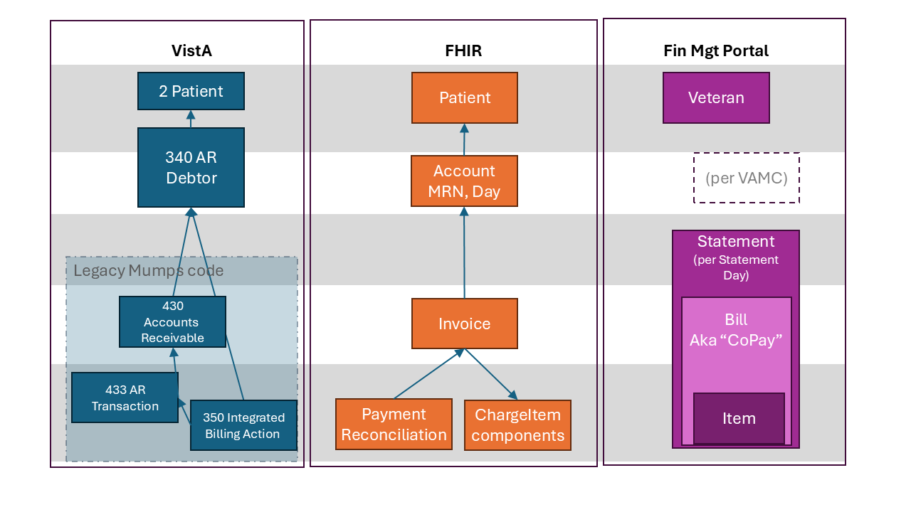

US Veterans Health Administration FHIR Map Set Implementation Guide
1.5.11 - 250601

US Veterans Health Administration FHIR Map Set Implementation Guide
1.5.11 - 250601

Publication Build: This will be filled in by the publication tooling
As a veteran incurs co-pay charges, they have a monthly statement generated on a pre-defined day of the month (AR DEBTOR – STATEMENT DAY, 340-.03). Each veteran is assigned a day that does not change; this varied day is to prevent the Consolidated Copayment Processing Center (CCPC), location where statement printing happens, from being overwhelmed if they were to have to print all the statements at beginning or the end of the month.
The statement data is gathered in the CCPC file can be found in VistA file 349.2, however the data is pulled from the Accounts Receivable (VistA file 430) and supporting VistA files.
The co-pay charges include prescriptions, outpatient visits, and inpatient stays. These charges are “billed” as they happen, meaning they will appear in the Accounts Receivable file with a billing reference number, but are not billed to the veteran until the monthly statement runs. There are times that more than one charge can be part of a billing reference; however, these specific details are unknown as to why or when they happen.
The Financial Management team (formerly known as VODA (Veteran Online Debt Access) team) maintains a portal where veterans can view their debt and copays online. They receive a copy of the CCPC file and use that to display debt information to veterans. The challenge with this is if a veteran makes a payment before the next statement period, they cannot see up-to-date information in the portal. This causes confusion and extra work to determine if the account is up to date.
Because a veteran can visit more than one VAMC (or STA3N), the Financial Management team is using the (Integration Control Number) ICN to get the data for a given veteran.
When a charge happens, it is first recorded in Integrated Billing Action (VistA file 350). This file has links to (or is pointed to) from the files that caused the charge–Prescriptions, Outpatient, and Inpatient.
At some point, a billing record is added to Accounts Receivable and AR Transaction (VistA file 433). Accounts Receivable has a single row for a given billing record, being updated with each transaction, while AR Transaction shows the various transactions. The charge from Integrated Billing Action appears in the AR Transaction file with an Accounts Receivable Trans. Type (VistA file 430.3) of “Increase Adjustment” (IEN = 1).
AR Transaction links to the Integrated Billing Action file with the field “Transaction Number” (433-.01). Not all rows in Integrated Billing Action may have a Transaction Number; this appears to be cancellations (or removed charges) as they link to their original transaction.
When payments are made, they can be either partial (AR Transaction Type of “PAYMENT (IN PART)”, IEN=2) or full (AR Transaction Type of “PAYMENT (IN FULL)”, IEN=34). If a partial payment is made, it is applied to any interest and admin fees first before being applied to the principal. These transactions will show as line items in the AR Transaction file while the Accounts Receivable row will be updated, including any balances for that given bill.
A charge can be removed (cancelled). This will show in the IB Action table and may have a corresponding row in the AR Transaction table with an AR Transaction Type of “Decrease Adjustment” (IEN=35). The original row in IB Action is updated with the Charge Removal Reason along with the IB Action row that is the removal. Both will have positive amount values, but they are meant to cancel each other out.
If the veteran does not pay in a timely fashion, interest and administrative fees will be added. These will appear in the AR Transaction table with an AR Transaction type of IEN=12 ADMIN.COST CHARGE or IEN=13 INTEREST/ADM. CHARGE. Per the Lighthouse team, IEN=14 EXEMPT INT/ADM. COST is the cancellation/removal of the interest and admin fees, however, this has not been confirmed, especially with the business.
Other than balances for each bill, account level or statement level balances are not stored in VistA and thus not in CDW.
A Lighthouse team member who was familiar with Mumps code reviewed the CCPC file source code and constructed it into a SQL statement (“Load AR_CCPC_Statements.sql”) to pull data to be used in a new FHIR API.
Using this SQL in conjunction with the data in the CCPC file, the data was mapped to FHIR. FHIR R4 was used as the base for the mapping, with some fields pre-adopted from FHIR R5.
Statement is not a concept that exists in FHIR R4 but is being considered for FHIR R6. However, the “statement” for the veteran does not exist in VistA or CDW; it is programmatically created on the Statement Day assigned to the veteran, thus the data has been mapped to other FHIR resources that represent the data.
Any data that related to the patient and not a specific bill was mapped to the account resource. This includes Statement Day (as an extension named StatementGenerationDay), patient billing address (not yet in CDW), and account number. StatementGenerationDay can be used by the consuming app to display bills grouped as monthly “statements”.
Account number is made up of 3 fields concatenated together: the Sta3n, the Patient.IEN (paded with leading 0's to make 13 digits), and the first 5 characters of the LastName. The Patient IEN was confirmed with the Financial Management team for VistA. This format aligns with what is necessary for the veteran to make a payment on pay.va.gov. Oracle uses a different value than the IEN, however, this was not mapped. Data for display on the portal will only come from VistA at the present.
The data that is assigned to a billing reference (also called bill number) has been mapped to the Invoice resource. Invoice seems to align with the concept of a bill. Invoice is the container for the items on the bill, including charges, charge cancellations, interest, and admin fees; payments are tied to invoice through PaymentReconciliation using a FHIR R5 extension to link to the bill from allocation.
Each invoice can have line items and these line items can be described as CodeableConcepts or as a reference to chargeItem. Because the Financial Management team would like more details about the individual charges, chargeItem was used so that it could reference Encounter (for inpatient and outpatient copays) and MedicationDispense (for prescription copays) along with details about the charge, such as dates and performers.
Similarly, interest and admin fees could be line items on a bill. These were also mapped using ChargeItem so that the date charged is separate from the bill details.
While payments could be considered a bill line item, ChargeItem does not provide details specific to payments so the PaymentReconciliation resource was used to map payments. PaymentReconciliation in FHIR R4 did not have linkage to the patient/debtor, so a FHIR R5 extension was pre-adopted to be able to link the payment to the patient. PaymentReconciliation also did not have a field to indicate the invoice the payment was for so allocation was pre-adopted from FHIR R5.
